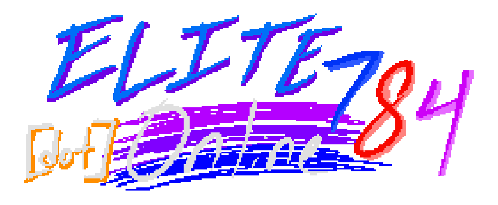

returning visitors please reload with CTRL+SHIFT+R or cmd+option+R
mobile users, if you can, please visit on desktop instead
CONTINUE TO WEBSITE >>>
CONNECT TO HOME SERVER >>>
[server status:
OFF-LINE
]
WEBMASTER CHECK >>>